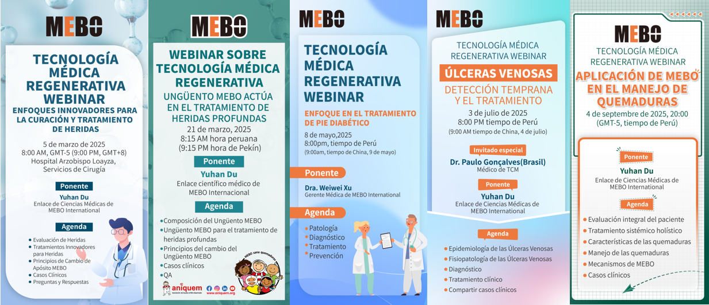

Tres décadas regenerando vidas
Desde 1987, MEBO International ha transformado el tratamiento de quemaduras y heridas crónicas, estableciendo un nuevo paradigma en la medicina regenerativa.
Misión, visión y valores
Los principios que guían cada decisión en MEBO International y que nos han permitido transformar la vida de millones de pacientes durante más de tres décadas.
Misión
Proporcionar soluciones terapéuticas regenerativas que alivien el sufrimiento de los pacientes con quemaduras y heridas crónicas, promoviendo la curación natural de la piel sin necesidad de cirugía invasiva.
- Accesibilidad global del tratamiento
- Calidad farmacéutica certificada
- Formación continua para profesionales
Visión
Ser el referente global en medicina regenerativa, llevando la medicina regenerativa a cada rincón del mundo donde exista un paciente que necesite regenerar su piel.
- Expansión a 100+ países
- Liderazgo en investigación regenerativa
- Estándar de atención global
Valores
Innovación científica, respeto por la vida, integridad académica y compromiso inquebrantable con el bienestar del paciente en cada decisión.
- Ciencia basada en evidencia
- Respeto por la dignidad humana
- Integridad en toda investigación
- Compromiso con el paciente
Hitos de MEBO International
Casi cuatro décadas de innovación continua, expansión global y compromiso con la ciencia regenerativa.
Fundación
El profesor Rongxiang Xu funda el Instituto Guangming de Quemaduras y Llagas en Pekín: nace MEBO.
El profesor Rongxiang Xu, fundador de MEBOPrimer certificado de nuevo fármaco
La Pomada MEBO recibe el primer certificado de nuevo fármaco de medicina tradicional china del Ministerio de Salud para el tratamiento de quemaduras.
Adopción nacional
La medicina regenerativa se adopta en más de 4.000 hospitales de China, transformando el estándar del tratamiento de quemaduras.
Primer medicamento aprobado y patentado
El primer medicamento de MEBO es aprobado y patentado, y se pone en marcha Shantou MEBO como base de producción del grupo.
Patente en EE. UU. y primeros mercados internacionales
MEBO obtiene la patente estadounidense para su fórmula de pomada para quemaduras. Clasificada como tratamiento de ámbito nacional en China, la terapia se lanza en Siria, Emiratos Árabes Unidos, Corea del Sur y Tailandia.
Presencia global
MEBO se expande a más de 70 países de Asia, Oriente Medio, África, Europa y América Latina, tratando a millones de pacientes.
Sistema científico completado e inicio de ensayos de la FDA
Se completa y anuncia la teoría científica sistemática de la medicina regenerativa, se lanza el primer producto de salud y comienzan los ensayos clínicos ante la FDA de EE. UU.
Sudeste Asiático y alianza con el Golfo
MEBO se lanza en Indonesia, Filipinas, Nueva Zelanda y otros mercados, y forma una alianza estratégica con Gulf Pharmaceutical Industries (Julphar).
Nueva generación
Kevin Xu se gradúa de la USC y asume el liderazgo como CEO de MEBO International, impulsando la expansión en medicina regenerativa y ciencias de la vida.
Reconocimiento en la ONU
Kevin Xu recibe el reconocimiento Empact 100 en las Naciones Unidas, que destaca el impacto de los jóvenes emprendedores en la economía global.
Legado académico
Se establece la Cátedra Kevin Xu de Gerontología en la USC Leonard Davis School. Kevin Xu es invitado a la cena de estado de la Casa Blanca en honor al primer ministro italiano Matteo Renzi.
Autorización de la FDA
La Pomada MEBO obtiene la autorización 510(k) de la FDA de Estados Unidos como dispositivo médico para el tratamiento de quemaduras. Kevin Xu recibe el USC Young Alumni Merit Award.

Copresidencia del Comité Anfitrión de APEC 2023
Kevin Xu actúa como Copresidente del Comité Anfitrión de APEC 2023 en San Francisco, con MEBO International como socio empresarial oficial. Durante la cumbre asiste a la cena privada de la presidenta de Perú, Dina Boluarte, para preparar el traspaso de la presidencia de APEC a Perú. MEBO alcanza presencia en 73 países.
Leer la historia →
Acción Vida Regenerativa con ANIQUEM
El Grupo MEBO y la organización peruana sin ánimo de lucro ANIQUEM firman en Lima un acuerdo de cooperación para ofrecer rehabilitación integral a niños en situación de pobreza que han sufrido quemaduras graves: el acto de apertura de la serie APEC 2024 de MEBO.
Leer la historia →
Foro de América Latina en Lima
Coorganizado con la Sociedad Internacional de Medicina Regenerativa y Reparación de Heridas y el socio peruano Discontinental, el Simposio Internacional de Medicina Regenerativa y Heridas — Foro de América Latina reúne a más de 150 profesionales sanitarios para profundizar la cooperación médica regional.
Leer la historia →
Cumbre APEC 2024 Silicon Valley
La Cumbre APEC 2024 Silicon Valley, copresentada por el Bay Area Council y MEBO International, abre la Semana de Líderes en Lima, donde la gira global de la Acción Vida Regenerativa inicia su primera parada. Kevin Xu pronuncia un discurso en la Cumbre de CEO de APEC, consolidando el papel de MEBO en la cooperación económica global.
Leer la historia →
Lanzamiento de la serie de seminarios web de América Latina
MEBO International lanza una serie de seminarios web sobre tecnología médica regenerativa en el marco de cooperación de APEC, promoviendo el intercambio médico en América Latina, elevando los estándares regionales de atención e impulsando la aplicación localizada de la medicina regenerativa en mercados emergentes como Perú.

EWMA 2025 en Barcelona
Exponiendo por octavo año consecutivo en la conferencia de la Asociación Europea de Manejo de Heridas, MEBO coorganiza un simposio de tecnología médica regenerativa e inaugura la parada europea de la gira global de la Acción Vida Regenerativa.
Leer la historia →Doctorado Honoris Causa
Kevin Xu recibe el Doctorado Honoris Causa en Humanidades de la California State University, Los Ángeles, y es invitado a APEC Corea 2025 para pronunciar un discurso en la Cumbre de CEO.

Iniciativa Silver Healing con CGI
En el Grupo de Trabajo de Salud de la Clinton Global Initiative, durante la semana de la Asamblea General de la ONU, Kevin Xu lanza 'Silver Healing: Equitable Community Wound Care', que lleva el cuidado regenerativo de heridas a pacientes mayores en comunidades de 28 países y regiones entre 2025 y 2028.
Leer la historia →
Los seminarios Silver Healing avanzan en América Latina
La serie de seminarios de tecnología médica regenerativa de América Latina continúa con seis sesiones previstas para 2026 —dos alineadas con Silver Healing—, llevando formación en cuidado comunitario de heridas de personas mayores a trabajadores sanitarios de Perú, Argentina, Costa Rica y más países.
Leer la historia →
Debut en Hospitalar 2026, Brasil
MEBO International presenta por primera vez la tecnología médica regenerativa en Hospitalar, São Paulo, atrayendo a distribuidores y profesionales del cuidado de heridas de ocho países latinoamericanos y alcanzando una intención preliminar de cooperación con una empresa farmacéutica local.
Leer la historia →La expansión rápida continúa
Expansión rápida desde 2015: alianzas revolucionarias que siguen desarrollándose en las economías APEC y más allá, llevando las ciencias de la vida regenerativa a más pacientes en todo el mundo.
MEBO en América Latina
Comprometidos con la salud de los pacientes latinoamericanos, con presencia consolidada en toda la región.
Certificaciones y reconocimientos
El compromiso de MEBO con la calidad está respaldado por certificaciones internacionales rigurosas.
Autorización de la FDA de Estados Unidos como dispositivo médico (K193439)
Patente estadounidense concedida en 1995 para la fórmula de ungüento para quemaduras
Certificación de nuevo fármaco del Ministerio de Salud de China
Sistema de gestión de calidad para productos médicos
Conozca la ciencia detrás de MEBO
Descubra cómo la medicina regenerativa está transformando el tratamiento de quemaduras y heridas crónicas en todo el mundo.
Explorar la Medicina Regenerativa